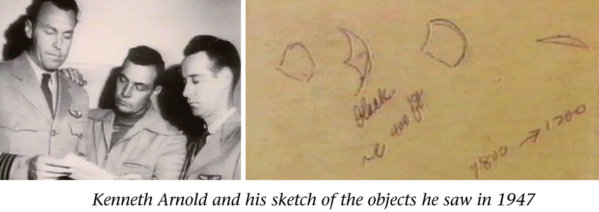

John Keel : 1947-06-24, WA 上空で Kenneth Arnold が UFO 群を目撃した当夜、WA で大勢が orb を目撃

(image source : http://thelivingsky.com/the-sky-is-alive/ )
前置き
- これは初耳。 - なお、Kenneth Arnold が UFO 群を目撃したのは WA(Washington 州)の Mount Rainier 上空で時刻は 15:00 ごろ。引用
The Purple Blobs Among the most neglected of all the soft sightings are the strange purple blobs, some so faint that they can barely be seen with the naked eye. Such blobs were frequently reported in earlier days of the saucer scare, but newspapers were soon diverted by the more intriguing hard sightings of seemingly solid disks. The purple blobs have been busy throughout the world, but the published sightings have become increasingly rare. People who see these things often dismiss them as some kind of illusion or natural phenomenon, or they feel they are not worthy of being reported. Between 9:15 and 11:00 P.M. on the night of June 24, 1947, scores of people in Seattle, Washington, watched peculiar purple and light-blue spots of light dancing around the skies. That was the same day that Kenneth Arnold saw his famous flying saucers.DeepL 訳
紫色の塊 肉眼ではほとんど見えないほど淡い紫色の球体もある。このような球体は、円盤騒ぎの初期に頻繁に報告されたが、新聞はすぐに、一見固い円盤のような、より興味をそそるハードな目撃情報にそっぽを向いた。紫色の塊は世界中で賑わいを見せているが、公表される目撃例はますます少なくなってきている。これらを見た人は、何らかの錯覚や自然現象だと片付けたり、報道するに値しないと感じたりすることが多いようだ。 1947年6月24日の夜9時15分から11時の間、ワシントン州シアトルで数多くの人々が、空に舞う紫や水色の奇妙な光の点を見ていた。それは、ケネス・アーノルドが有名な空飛ぶ円盤を見たのと同じ日であった。 ref: John Keel, "Operation Trojan Horse", 56頁コメント 1
- ざっとチェックしたら、Wikipedia(*1) にも同様の言及があった。下記がそれ。Other Seattle area newspapers also reported other sightings of flashing, rapidly moving unknown objects on the same day, but not the same time, as Arnold's sighting. Most of these sightings were over Seattle or west of Seattle in the town of Bremerton, either that morning or at night.[17] 他のシアトル地域の新聞も、アーノルドの目撃と同じ日、同じ時間ではないが、点滅し、急速に移動する未知の物体の目撃を報告している。これらの目撃情報のほとんどは、シアトル上空かシアトルの西にあるブレマートンという町で、その日の朝か夜に目撃されたものであった[17]。コメント 2
- このデータは私の以下の推測を支持している。 Daniel Liszt : Kenneth Arnold の目撃した UFOs の挙動の詳細 → この UFO はたぶん自然現象 (2022-06-28) - つまり、 ・現地は断層地帯が多く、当日は地殻圧力が高じて EMF 異常が発生 → orb 群が発生 という機序だろう。(*1)参考
- ref: Kenneth Arnold UFO sighting - Wikipedia - https://en.wikipedia.org/wiki/Kenneth_Arnold_UFO_sightingDeepL 訳
1947年6月24日、アーノルドは出張のため、コールエアーA-2でワシントン州チェハリスからヤキマに向かっていた。レーニア山付近に墜落した米海兵隊のC-46輸送機の発見に対して5,000ドル（現在の61,000ドルに相当）の報奨金が出ることを知り、少し寄り道した[1]。 空は完全に晴れていて風も穏やかであった[2]。 15時数分前、高度約9,200フィート（2,800m）、ワシントン州ミネラル付近で、彼は捜索をあきらめ、ヤキマに向かって東に向かい始めた。その時、鏡に映った太陽光のような明るい光が見えた。他の航空機に接近するのを恐れたアーノルドは周囲の空を見渡したが、彼の左側と後方、約15マイル（24km）離れたところにDC-4が見えるだけだった[2]。 最初の閃光を見てから約30秒後、アーノルドは彼の左側、つまりレーニア山の北側で、20マイルから25マイル（32kmから40km）離れたところに、一連の明るい閃光を見た。しかし、飛行機を左右に揺らしたり、眼鏡を外したり、横の窓を開けてみたりした結果、そのようなことはありませんでした。しかし、飛行機を横に揺らしたり、眼鏡を外したり、横の窓を開けたりして調べた結果、そうではないことがわかった。アーノルドは、一瞬、ガチョウの群れではないかと思いましたが、高度が高い、光り方が明るい、速度が明らかに速いなど、多くの理由からすぐにこれを否定しました。そして、新しいタイプのジェット機かもしれないと考え、尾翼を熱心に探し始めたが、何も見つからなかったことに驚いた[1]。 彼らはすぐにレーニアに近づき、そして前を通り過ぎ、通常レーニアを覆う真っ白な雪原に対して横顔は暗く見えるが、時々不規則に反転しながらも明るい光の閃光を放つことがあったそうだ。しかし、時折、不規則に回転しながら明るい閃光を放つこともありました。ジェローム・クラークによると[3][4]、アーノルドはそれらを凸型の一連の物体であると説明したが、後に一つの物体は三日月型であることを明らかにしている。数年後、アーノルドはその動きを水面を滑る円盤に例えたと述べているが、実際の形状を円盤に例えたわけではない[5]が、初期の引用では確かに「円盤」「パイパン」「半月」、あるいは一般的に凸で薄い形状に例えたとされている[2]。 アーノルドは、9つの物体を遠くのDC-4と比較するためにドズスのカウリング・ファスナーをゲージとして使い、その角度の大きさをDC-4よりわずかに小さく、外側エンジンの間の幅（約60フィート（18m））程度と推定している。また、アーノルドは、その距離で詳細を見るには、物体がかなり大きくなければならないことに気づいたと言い、後に、10日後に同様の目撃をしたユナイテッド航空の乗務員(下記参照)とメモを比較し、絶対サイズはDC-4の旅客機より大きい（または長さが100フィート（30m）以上）と位置付けたという。陸軍空軍のアナリストは、人間の視力とその他の目撃情報の詳細（推定距離など）の分析に基づいて、後に140から280フィート（85m）と推定することになる[6]。 アーノルドは、テッド・ブローチャー[7]が書いているように、物体は「斜めに段差のあるエシュロン隊形で、後に5マイルと計算される距離にわたって伸びていた」と述べている。それらはほぼ水平な平面上を移動していたが、アーノルドは、物体は左右に揺れ動き（後に彼が述べたように「中国の凧の尾のように」）、谷を通り、小さな山の頂上を回っていたと述べている。その物体は、時折、旋回や操縦の際に一斉に反転したり、バンクしたりし、ほとんど眩しいほどの明るさや鏡のような閃光を発したという。この現象は彼に「不気味な感じ」を与えたが、アーノルドは米軍の新しい航空機の試験飛行を見たのではないかと考えた[2]。 物体がライナー山を通過するとき、アーノルドは飛行機を南へ向け、ほぼ平行に進路をとった。このとき、アーノルドは、サイドウィンドウを開けて、反射を防ぐガラスに邪魔されないように物体を観察し始めた。アーノルドによると、物体は消えることなく、非常に速く南下し続け、絶えず自分の位置より前方に移動していた。レーナー山からアダムス山まで、約80kmの距離を1分42秒で通過したという。その後、計算すると時速1,700マイル（時速2,700km）以上であった。これは、1947年当時の有人航空機の約3倍の速さである。物体が見えなくなるまでの距離を正確に把握していなかったアーノルドは、保守的かつ任意にこれを切り捨てて、時速1,200マイル（1,900km）にした。これは、まだ音の壁を破っていない既知のどの航空機よりも速い速度である。 アーノルドの体験談 ヤキマに着陸したアーノルドは、友人のパイロットに見たものを説明すると、誘導ミサイルかアメリカ軍が秘密裏に開発している新型飛行機を見たのではないかと言われた[8]。 給油後、彼はオレゴン州ペンドルトンでの航空ショーに向かって走り続けた。 [翌日（6月25日）、ペンドルトンの『イースト・オレゴニアン』紙に出向き、初めて記者のインタビューを受けた[9]が、記者たちがアーノルドに長時間インタビューしたところ、懐疑的な見方は消え去り、歴史家のマイク・ダッシュは次のように記録している[10]。 アーノルドは信頼できる目撃者としての素質があった。彼は尊敬されるビジネスマンであり、経験豊富なパイロットであった...そして、見たものを誇張したり、センセーショナルな内容を付け加えたりしていないようであった。また、注意深い観察者という印象もあった。このようなことが、取材した新聞記者の印象に残り、彼の報告に信憑性を持たせた。 AP通信の記者を前にして、アーノルドはこう言った。「この事件は手に負えなくなった。FBIか誰かに相談したい。半分の人は、私をアインシュタインとフラッシュゴードンとスクリューボールを合わせたような存在として見ている。アイダホにいる妻はどう思っているのだろう "と。 裏づけ ポートランド・オレゴン・ジャーナル紙は、7月4日にワシントン州リッチランド(アダムズ山の東約180マイル、レーニア山の南東約230マイル)のL・G・バーニアから手紙を受け取ったことを報告している。バーニアは、アーノルドの30分前に、リッチランド上空で3つの奇妙な物体がレーニア山に向かって「ほぼ端から」飛行するのを見たと書いています。バーニアは、この3つの物体がより大きな編隊の一部であると考えました。私は、P-38がある地平線に現れ、あっという間に反対側の地平線に行くのを見たことがあるが、これらの円盤は確かにどのP-38よりも速く移動していた」と、彼らが高速で移動していたことを示唆した。[P-38の最高速度は時速440マイルである。）アーノルド氏がそれを見たのは、その速度からすると、ほんの数分後か数秒後であることは間違いない」[13] 前日、バーニアは地元の新聞、Richland Washington Villagerにも話しており、地球外からの起源を示唆する最初の目撃者の一人であった。「私はそれが他の惑星からの訪問者であるかもしれないと信じています"[14]。 リッチランドの西北西約97kmのワシントン州ヤキマでは、エセル・ホイールハウスという女性が、アーノルドの目撃とほぼ同じ時期に素晴らしい速度で動く複数の空飛ぶ円盤を目撃したと同様に報告している[15]。 7月初旬に軍の情報部がアーノルドの目撃について調査を始めたとき（下記参照）、彼らはその地域からさらに別の目撃者を発見した。ワシントン州の森林局員は、ヤキマの南20マイル(32km)にあるダイアモンドギャップの塔で火の番をしていたが、24日午後3時(アーノルドの目撃と全く同じ時刻)にレーニア山上で直線的に動くような「閃光」を見たというのである[15]。同様に、午後3時、ワシントン州のシドニー・B・ギャラガー（正確な位置は不明）は、北の方で9つの光る円盤が点滅するのを見たと報告している[16]。 他のシアトル地域の新聞も、アーノルドの目撃と同じ日、同じ時間ではないが、点滅し、急速に移動する未知の物体の目撃を報告している。これらの目撃情報のほとんどは、シアトル上空かシアトルの西にあるブレマートンという町で、その日の朝か夜に目撃されたものであった[17]。 しかし、その10日後（7月4日）、シアトルに向かうアイダホ上空のユナイテッド航空の乗務員が、5から9個の円盤状の物体を目撃し、10分から15分ほど機体の周りを歩き、突然消えてしまった。 アーノルド、地球外起源の可能性を語る 1947年7月7日、アーノルドが地球外生命体の起源について言及した二つの記事が発表された。AP通信の記事の中で、アーノルドは、謎を解く手助けをしたいというファンからの手紙が大量に届いたが、その中に彼を「ねじくれ者」と呼ぶものはなかったと述べている。その中には、アーノルドが語った終末論者のように、彼の目撃談を宗教的に解釈する人もいた。しかし、「円盤は他の惑星からの訪問物ではないか」と言う人もいた。アーノルドは、彼が見たものの写真的な証拠を得ることを望んで、彼は今、すべての飛行で彼と一緒に取るだろう、ムービーカメラを購入したと付け加えた[19]。 もう一つの物語では、アーノルドは『シカゴ・タイムズ』紙のインタビューを受けている。 「ケネス・ルイス・アーノルドは、この奇妙な仕掛けがこの惑星で作られたものであるとは、あまり確信していない。アーノルドは...その装置が本当にアメリカ軍の仕事であることを望むと言った。しかし、彼はTIMES紙との電話会談で、『もし、我々の政府がこれらの装置について何か知っているならば、国民に直ちに知らせるべきである。この辺りでは、多くの人々が非常に心を痛めている。他の惑星から来たものだと思っている人もいる。しかし、彼らは誰にも危害を加えていないし、たとえ撃墜できたとしても、その1つを撃ち落とすのは間違ったことだと思う。スピードが速ければ、完全に破壊されてしまう......」。 「アーノルドは、このディスクが別世界のものである可能性を指摘した上で、その起源がどうであれ、彼らは明らかに到達可能な目的地に向かって移動しているのだと語った。それを操っているのが誰であれ、明らかに誰も傷つけようとはしていない、と彼は言った。...彼は、円盤が山頂を回る際に非常に突然に旋回するので、内部の人間のパイロットが圧力に耐えることは不可能であっただろうと言いました。だから、彼はまた、それが火星、金星、または私たち自身の惑星からであるかどうかに関係なく、彼らが他の場所から制御されていると考えています[20]。 7月19日のAP通信の記事で、アーノルドは、もし彼らが陸軍でないなら、地球外生命体であるという彼の信念を繰り返した。 "ミネソタ大学の元水泳選手とサッカー選手は、彼が今信じていると言う。 1. 円盤は外国から来たものではない。 2. 2.陸軍はその気になれば答えを出すことができる-「もし、今、説明がつかないのなら、何か調べてもいいはずだ」。 3. 陸軍が何の説明もしないのであれば、円盤は-『おかしな話だと思うが』-他の惑星から来たものに違いない」[21]。 1949年4月、『Saturday Evening Post』紙の「空飛ぶ円盤について信じられること」と題する懐疑的な記事の中で、アーノルドは同様に引用されている。 いわゆる "空飛ぶ円盤 "を最初に観察して報告して以来、私は多くのお金と時間を費やして、このテーマを徹底的に調査してきた......。これらの物体が奇妙な設計の航空機であり、この地球の文明にとって未知の物質であることは疑う余地がない」[22]。 1950年、放送作家エドワード・R・マローはアーノルドにインタビューし、彼は1947年6月以来、さらに3回9つの宇宙船を目撃していると述べた。 パブリシティと "空飛ぶ円盤 "という用語の起源 アーノルドの話は、6月25日の新聞の遅めの版で初めて取り上げられ、26日以降、多くのアメリカ、カナダの新聞（一部外国の新聞）に、しばしば一面トップで掲載されるようになった。ブルーチャー氏によると、アーノルドの話は例外なく、最初は真面目で平静な調子で語られた。アーノルドに最初にインタビューした記者は、6月25日にオレゴン州ペンドルトンの『イースト・オレゴニアン』紙のノーラン・スキフとビル・ベケットで、ベケットが書いたアーノルド目撃談の最初の記事は、同日の新聞に掲載された[23]。 用語の出現 6月26日と6月27日から、新聞は目撃された物体を表現するために「空飛ぶ円盤」や「空飛ぶ円盤」（または「ディスク」）という言葉を初めて使うようになった。このように、アーノルドの目撃は、これらの一般的な用語を生み出したとされている。この用語の実際の由来は、やや議論のあるところであり、複雑である。ジェローム・クラークは、1970年のハーバート・ストレンツによる研究を引用し、アーノルドのUFO目撃に関するアメリカの新聞記事を検討し、この用語はおそらく編集者や見出しライターによるものであると結論付けた：初期のアーノルドのニュース記事の本文は、「空飛ぶ円盤」や「空飛ぶディスク」という用語を使っていない[24]。しかし、初期の記事は実際にアーノルドがその形状について「円盤」「ディスク」「パイパン」などの用語を使って説明したということになっている。(以下、さらに引用） Bequetteのインタビュー 数年後、アーノルドはビル・ベケットに "水面を飛ばせば円盤のように不規則に飛ぶ "と言ったと主張している。アーノルドは、この記述が物体の形ではなく、動きを指しているため、誤引用されたと感じた[5]。このため、ベケットはしばしば「空飛ぶ円盤」を最初に使い、アーノルドを誤引用したとされるが、ベケットの初期の記事にはこの用語は出てこない。その代わり、6月25日の彼の最初の記事には、「彼は9機の円盤のような飛行機が編隊を組んで飛んでいるのを目撃したと言ったが...」とだけ書かれている[25]。 翌日、ベケットは、より詳細な記事で、「彼は、カスケード山脈の上を "中国の凧の尾のような "独特な織り方をする光沢のある平たい物体が競争しているという話に固執した...」と書いている。 彼はまた、物体を「円盤のような」と表現し、その動きを「太陽の下で反転する魚のようだ」と表現した...アーノルドは、物体を「パイパンのように平たく、ややコウモリ型」と表現した"[26] ベケットが初めて「空飛ぶ円盤」（「空飛ぶ円盤」ではない）という用語を使ったのは6月28日であった。 初期の新聞記事を見ると、アーノルドは目撃した直後、一般的に物体の形状を薄く平らで、前部は丸みを帯びているが後部は切り立ち、点に向かっている、つまり、多かれ少なかれ円盤状または円盤状と表現していることがわかる。また、彼は、その形状を説明する際に、「ソーサー」または「ソーサー状」、「ディスク」、「パイパン」または「パイプレート」といった用語を具体的に使用している。運動については、一般に凧の尾のようなウィービングと不規則なフリップと表現している。 例えば、ペンドルトンの地元ラジオ局KWRCで放送された、ペンドルトンのユナイテッド・プレス特派員テッド・スミス記者による1947年6月26日の現存するラジオインタビューでは、アーノルドはそれらを "パイ皿を半分に切り、後ろに凸型の三角形のようなものがある "と表現している[27]。彼の動作描写は 「私は、私の左側に、中国の凧の尾のように見える鎖があることに気づきました。UFO関連の音声クリップ アーノルド目撃の後、広まったUFOの報告 主な記事 1947年の空飛ぶ円盤ブーム 7月4日にユナイテッド航空の乗務員がアイダホ上空で目撃した9つの円盤状の物体は、おそらくアーノルドの最初の目撃談よりも多くの新聞報道を受け、その後の数日間のメディア報道の水門を開いたと考えられる。 この時期のUFO事件で最も有名なのは、1947年7月8日に報道されたロズウェルUFO事件である。ロズウェル事件が発覚する直前、ワシントンの陸軍航空隊は、この事件を調査中であり、空飛ぶ円盤は「外国が設計した秘密の細菌兵器」でも「新型陸軍ロケット」でも「宇宙船」でもないと判断したという報道声明を発表した[29][29]。 軍によるアーノルドの調査 アーノルドの主張に対する最初の調査は、カリフォルニア州ハミルトン飛行場のフランク・ブラウン中尉とウィリアム・デビッドソン少佐が、7月12日にアーノルドに聞き取りを行ったものである。この時、アーノルドは報告書も提出している。アーノルドの目撃談の信憑性について、彼らはこう結論付けている。 アーノルドの目撃談の信頼性については、「アーノルド氏が見たものは、彼が見たと述べたものを実際に見たというのが、現在の取材者の意見である。彼のような性格で誠実そうな人物が、もし見ていない物体を見たと述べ、そのような報告書を書くとは考えにくい」[31]。 他の者はあまり感心していなかった。陸軍航空隊のハル・L・ユースタス中尉は、機密解除された1947年7月の情報報告書の中で、アーノルドは「興奮しやすいが、適度にバランスが取れているようだ」と述べ、アーノルドの報告を「愚かな季節のエピソード」の事例と表現している[1]。 陸軍航空軍の正式な公開結論は「この目撃の対象は蜃気楼によるもの」であった[1]。 7月9日、AAFの情報部はFBIの協力を得て、主にパイロットや軍人から寄せられた最高の目撃談の調査を密かに開始した。アーノルドの目撃談も、ユナイテッド航空の乗組員の目撃談も、ベスト目撃談のリストに含まれていた。その3週間後、彼らは「円盤の報告は想像や自然現象で十分説明できるものではなく、実際に何かが飛んでいるのだ」という結論に達した。これは、1947年9月に航空軍司令官ネイサン・トワイニング元帥が行った別の情報見積もりの土台となり、同様に円盤は実在すると結論づけ、複数の政府機関による正式な調査を促した。この結果、1947年末にプロジェクト・サインが結成され、公に認められた最初のUSAF UFO調査が行われた。プロジェクト・サインは、やがてプロジェクト・グラッジに発展し、さらにプロジェクト・ブルーブックとして知られるようになりました。 米空軍のプロジェクト・サイン（1947-1949）の職員も、後にアーノルドの話を研究しています。エドワード・J・ルペルト少佐によると 私はこの報告書について（サイン関係者の間で）多くの憶測が飛び交っていることを知った。二つの派閥が......二つの推論をめぐって合流した。一つは、アーノルドが見たのは、ごく普通のジェット機が編隊を組んで飛んでいるところだったというものだ。もう一方は、この説をまったく信用していなかった。彼らは、アーノルドが時間を計った時に、その物体がどこにあるかを知っていたという事実を論拠にしたのです． アーノルドは、山の尾根に沿って雪を巻き上げる風を見たのではないかという古い説があったので、私は空軍の調査官にこのことを尋ねてみた。しかし、「ありえない」という答えが返ってきた[32]。 懐疑的な説明 目撃の2日後にThe Minneapolis Starに掲載された記事の中で、レーニア山とアダムス山の山頂の中間点から約75空域にあるマクコード陸軍飛行場の関係者は「記述の近くに来る飛行機は高速のP-80だけだと理論付け」[33]、マクコードの関係者はP-80が基地のある飛行場としてはカリフォルニア州のマーチフィールドが最も近いと付け加えている。マーチフィールドはレーニア山とアダムズ山の山頂の中間点から約600空里（P-80で約1時間の旅）であった[34]。 ニューメキシコ州ホワイトサンズ試験場の司令官ハリー・R・ターナー中佐も、アーノルドの目撃はジェット機の出現と一致すると記者に語っている[35]。 オレゴン州ポートランドの警察官などが7月4日に「飛行円盤」を報告すると、軍当局は「『円盤』が報告された頃に24機のP-80戦闘機と6機の爆撃機がこの都市の上を飛んでいたと指摘することによって答えた」[36]。 ステュアート・キャンベルは、アーノルドが報告した物体は、カスケード山脈の雪をかぶったいくつかの峰の蜃気楼であったかもしれないと述べている。キャンベルの計算では、物体はアーノルドの飛行機とほぼ同じ速度で飛行しており、物体は実際には静止していたことが判明している。蜃気楼は、視線上にあるいくつかの深い谷の温度逆転によって引き起こされた可能性がある[37]。 フィリップ・J・クラス[38]は、サンフランシスコ・エグザミナー紙のキー・デイビッドソンの記事を引用して、アーノルドが1947年6月24日に流星を誤認した可能性があると論じている。 ペリカンはワシントン地方に生息し、大型で（翼長3m以上も珍しくない）、下面は青白く光を反射し、かなり高い高度を飛ぶことができ、飛行中はやや三日月型の輪郭を持つように見えることから、アーノルドはペリカンを見誤ったのではないかと疑った最初の懐疑論者がジェームズ・イーストン[39]である。 ドナルド・メンゼルの解説 ドナルド・メンゼルは、ハーバード大学の天文学者で、最も早い時期にUFOを否定した一人です。彼は長年にわたって、1947年のアーノルドのUFO目撃についていくつかの可能な説明を提供した[40]。 1953年、メンゼルはアーノルドがレーニア山の南側の山から吹き飛ばされた雪雲を見たことを示唆した。 1963年、メンゼルはアーノルドがオログラフィック雲または波状雲を見たと提案した。 1971年、メンゼルはアーノルドが飛行機の窓ガラスに水滴を見ただけかもしれないと述べている。 (2022-08-16)
初出
John Keel : 1947-06-24, WA 上空で Kenneth Arnold が UFO 群を目撃した当夜、WA で大勢が orb を目撃 (2022-08-16)